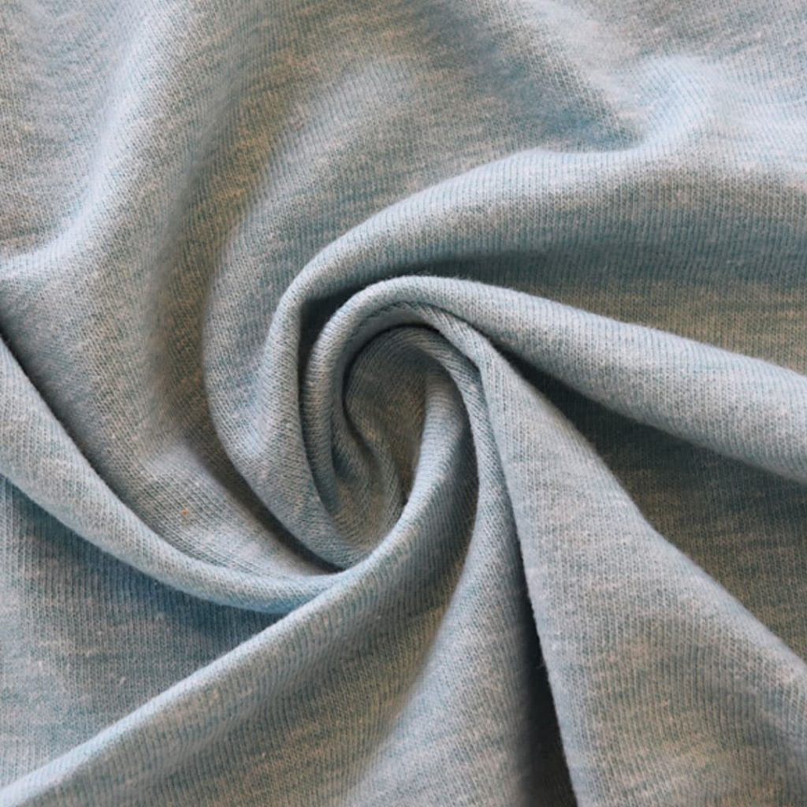
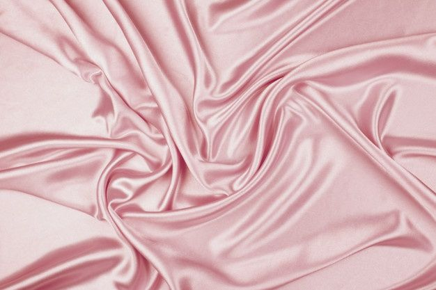
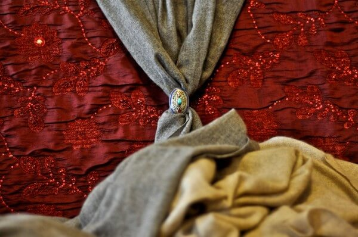

Los tejidos de jersey se realizan mediante la tecnología de tricotado circular, dando la posibilidad de crear tejidos de punto combinando hilados de todo tipo, de las fibras naturales o artificiales a las sintéticas frecuentemente unidas por hilos de spandex. A fines del siglo XIX, el "jersey" era un tejido de punto usado principalmente para las prendas de trabajo de los pescadores de la isla inglesa de Jersey.
El satén es un tejido de algodón caracterizado por un elegante brillo exterior y una buena consistencia El satén consigue su tacto liso y brillante gracias a los hilvanes largos que forman los hilos de la trama en su parte derecha. Una cara del tejido suele ser más mate que la otra. Parece que su origen se localiza en la ciudad china de Tsia Toung en la que todavía existe una importante industria productiva.
La tela más cara del mundo viene del Himalaya, pero es ilegal El shahtoosh, que ayudó a iniciar la industria de la pashmina y proviene de antílopes de esa región, esta vedada y se vende por internet.
LINK 